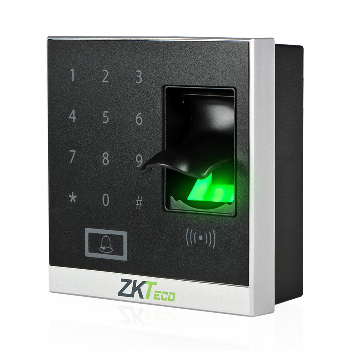
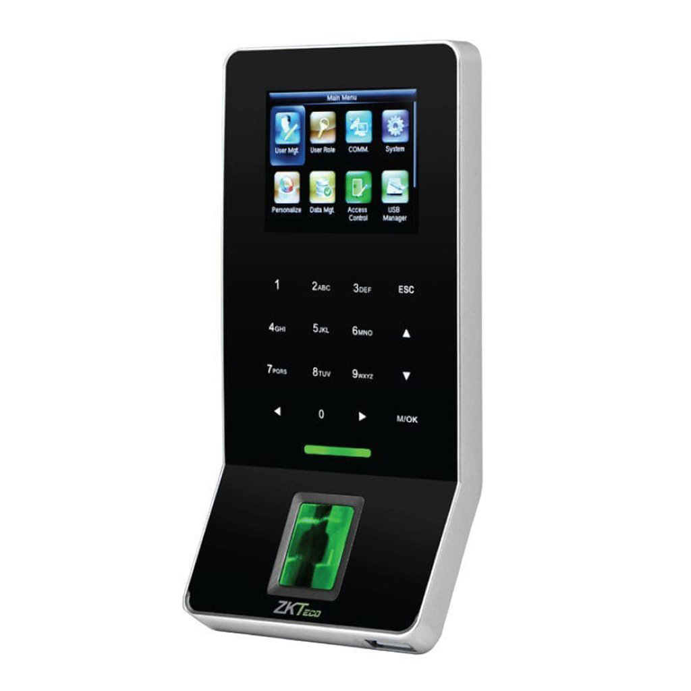
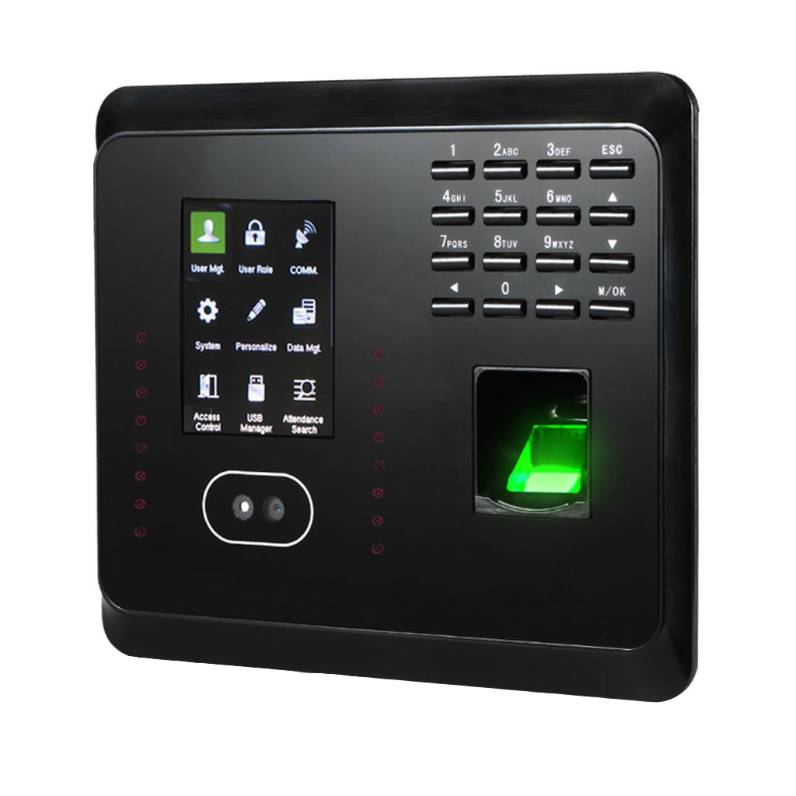
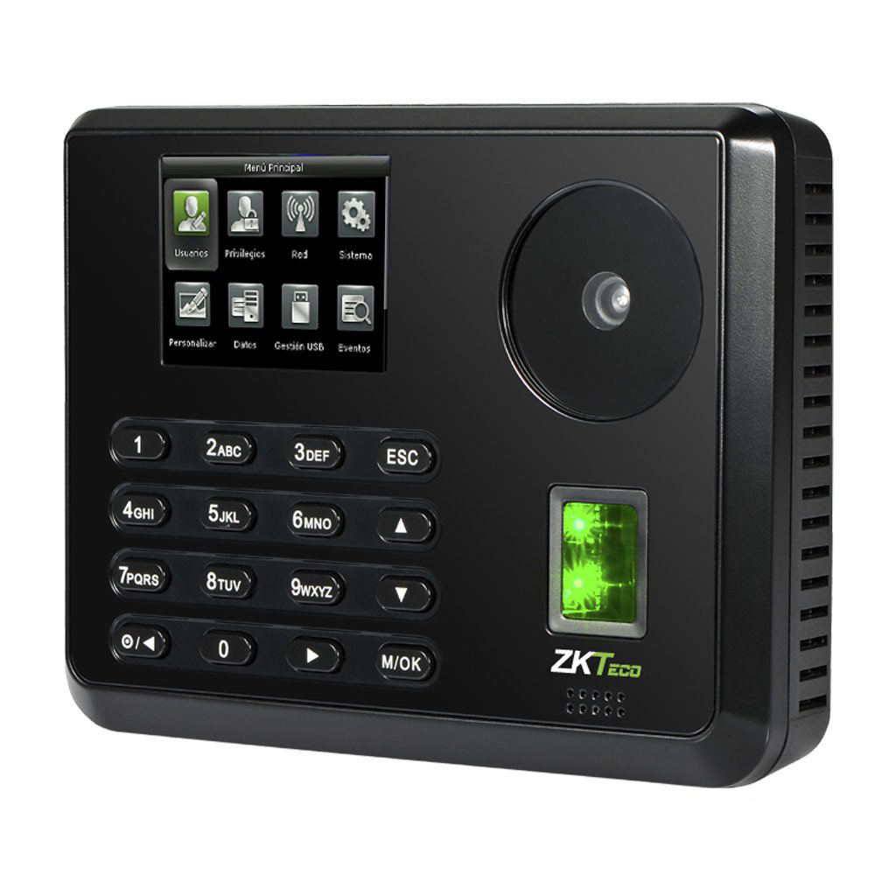
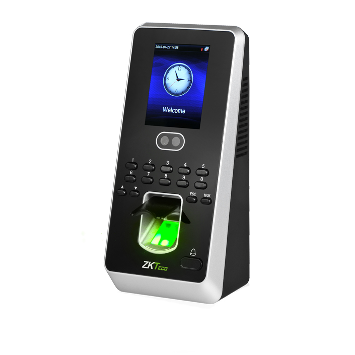

El X8s es el lector biométrico de huella digital más innovador para aplicaciones de control
de
acceso que ofrece un rendimiento sin precedentes utilizando un algoritmo avanzado con una
excelente confiabilidad, precisión y velocidad.
Puede operar de manera independiente a la interfaz para cerradura eléctrica, alarma, sensor
de
puerta, botón de salida y timbre.
El teclado táctil integrado al X8s es sencillo y conveniente para enrolar, eliminar usuarios
y
realizar las configuraciones de parámetros de control de acceso, proporcionando al usuario
una
cómoda experiencia.
$1,490

F22 es una terminal biométrica ultra delgada para control de acceso y gestión de asistencia
de
empleados, integrado con sensor BioID y comunicación Wi-Fi, lo que en conjunto con su
avanzado y
veloz algoritmo, ofrece un gran, confiable y preciso rendimiento.
El F22 brinda una mejor experiencia con su teclado táctil y ofrece una gran flexibilidad para
su
instalación como dispositivo independiente o conectado a cualquier panel de control de
acceso
que
soporte señal Wiegand estándar.
Cuenta con comunicaciones TCP/IP, RS485 y Wi-Fi para que el dispositivo pueda ser utilizado
de
acuerdo a diferentes necesidades.
$4,999

El MB360 es un innovador dispositivo para la gestión de tiempo y asistencia de los empleados,
soporta métodos de verifícación por medio de rostro, huella digital, tarjeta, contraseña y
combinaciones entre los anteriores además de funciones básicas de Control de Acceso.
La verificación de usuarios es realizada en menos de 1 segundo, lo cual agiliza el proceso en
las
horas de entrada y salida.
La comunicación entre el MB360 y la PC se realiza por medio de la interfaz TCP/IP o mediante
USB,
para la transferencia manual de datos. Su diseño elegante encaja perfectamente en cualquier
tipo
de
ambiente.
$4,999

P160 es una terminal multi-biométrica para aplicaciones de Tiempo y Asistencia con funciones
de
Control de Acceso ya que puede ser conectada con cerraduras eléctricas, sensores de puertas
y
botones de salidas.
Cuenta con el más reciente algoritmo de reconocimiento de palma y huella digital que con su
optimizada tecnología puede almacenar hasta 600 plantillas de palma y hasta 3.000 de huella
digital.
Comunicación vía TCP/IP, USB-Host y Wi-Fi (Opcional), para garantizar una óptima conexión y
transferencia de datos. Además de poseer gran velocidad de verificación y una interfaz
amigable
con el usuario, su atractivo diseño es ideal para su instalación en oficinas.
$6,199

El MultiBio 800 es un equipo multibiométrico para el control de acceso y gestión del tiempo y
asistencia con verificación de rostro y huella. Integrado con el último algoritmo ZKFace 7.0
que
incorpora un veloz reconocimiento de rostro y una baja probabilidad de fallo.
Cuenta con interfaz de comunicación TCP/IP, RS485, USB-Host y Wiegand, además de una entrada
auxiliar que puede ser utilizada para vinculaciones como a una alarma de incendio.
El MultiBio 800 puede llevar a cabo la vericación por medio de rostro, huella, ID de usuario,
contraseña, tarjeta RFID (opcional) y diversos métodos de combinación que permiten
satisfacer
las
necesidades de los diferentes usuarios. Gracias a su cámara profesional y la alta resolución
con
la
que cuenta, el Multibio 800 ofrece un alto rendimiento aún en ambientes con poca luz.
$6,699